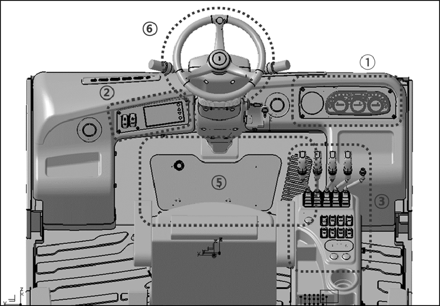

Operator’s Station and Monitoring Systems (CABIN)  (OVERHEAD GUARD) 1 The Right Side Dash Board (Cabin)2 The Left Side Dash Board (Cabin)3 The Operator & Switches4 The Left Side Dash Board (OVHD Guard)5 Pedal Configuration6 Steering WheelAir Conditioner ControllerHEATER FLOW CONTROL VALVE